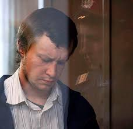

Russian Serial Killer
Alias: The Bitsa Park Maniac,
The Chessboard Killer
Born: Mytishchi, Russia
Victims: 48 confirmed, 60 confessed
Status: Life Inprisonments
Alexander Pichushkin was born on April 9th, 1971, in Moscow Russia. He had a normal childhood, however at the age of 4, he suffered a head injury due to a swing-set incident. This ultimately resulted in Pichushkin exhibiting abnormal and “unlike” behaviours such as impulsive decision making and violent outbursts (Criminal Minds Wiki, n.d.), (Sedlak-Hevener, n.d.). Alexander Pichushkin was originally nicknamed as the Bitsa Park Maniac, however when the police discovered how he liked to commemorate his victims, Pichushkin was branded with the Chessboard Killer title by media outlets (Lowe, 2007). Pichushkin would keep a journal where he drew a chessboard containing the dates each murder took place, on each square piece of the chessboard. (Sedlak-Hevener, n.d.) Pichushkin was first introduced to chess by his grandfather and would often sit at the park playing chess and drinking alcohol, although Pichushkin was good at chess, he found that alcohol would make him better. Thus, his method of killing would start with a drinking invitation, and later luring his victims to a quieter side of the park where he proceeded to attack them from behind. Pichushkin was arrested after a colleague left his phone number with a relative in case of any emergencies. Pichuskin invited his colleague into the woods, where she was later found murdered due to phone tracing by detectives. At the time of his arrest, Pichushkin occupied a total of 61 out of 64 pieces. His goal consisted of surpassing the most notorious serial killer at the time, known as the Rostov Ripper, which mutilated a total of 52 victims. He often described killing as “falling in love” (Lowe, 2007).